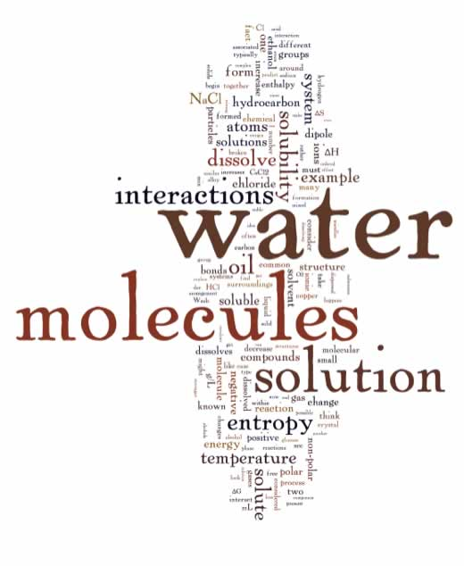

| Chapter 6: Solution – knowledge statements and learning goals |
Up to this point we have (we think you will agree) covered quite a number of ideas. We have considered the structure of atoms, discrete molecules, complex network solids, and metals. We have looked at how atoms and molecules interact, through London dispersion forces/van der Waals interactions, H-bonds, and covalent bonds. We have considered how such interactions, and changes in entropy, lead to the different states of matter: solids, liquids and gases. So far, so good, but you may have asked yourself, is this really chemistry? Where are the details about chemical reactions? acids and bases? gas laws and such? Not to worry, we have done this deliberately because you need a strong conceptual foundation before you deal with many of these topics in a useful manner. Without this background you would have no choice but to memorize whatever reactions we were to present and, as we will see, there are many different types of reactions that would quickly overwhelm even the most devoted student of chemistry. |
 |
| By now, you should have the beginnings of a toolkit of ideas with which to make sense of the behavior of increasingly complex chemical systems. Building on the basics, should help you make connections and make sense of seemingly disparate reactions. We will continually fall back on, and attempt to reinforce these basic ideas and their applications. As we will see, there are relatively few types of reactions that are relevant to most chemical systems. So let us begin, yet again. |
What is a solution and what does it mean to dissolve? The first type of complex system that we will consider is a solution. You almost certainly already have some thoughts about what a solution is and you might want to take a moment to think about what these are. This will help you recognize your implicit assumptions if they “get in the way” of understanding what a solution is scientifically. The major difference between a solution and the systems we have previously discussed is that solutions have more than one chemical substance in them. So that raises the question: what exactly is a solution? You probably have already considered some examples: perhaps sugar or salt dissolved in water or soda, but how about milk - is it a solution? Does a solution have to be a liquid or is the term more widely applicable? What is the difference between a solution and a mixture, or are they really the same? It turns out that we can make solutions from a wide range of starting materials. While it is common to think of solutions in terms of a solid dissolved into a liquid, this is definitely not the only type of solution. For example we can find solutions of a gas in a liquid (for example, fish use the molecular oxygen (O2) dissolved in water), solids in solids (an alloy such as brass is a solution of copper and zinc), gases in solids (hydrogen can be dissolved in the metal palladium), liquids in liquids (beer - mainly ethanol in water) to name a few. Let us take a closer look at what we mean by a solution, starting with a two component system. Typically one of the components will be present in a smaller amount than the other. We call the major component the solvent and the minor component(s), the solute(s). The most familiar solutions we deal with are aqueous solutions, in which water is the solvent. So for example, in a solution of the sugar glucose (in water), glucose molecules are the solute and water molecules are the solvent. Beer, which is typically 2-4% ethanol, ethanol is the primary solute and water is the solvent. One overarching idea about solutions (once they are thoroughly mixed) is that they have the same composition throughout –they are homogeneous at the macroscopic scale, even though at the nanoscopic scale we would still find different types of molecules. The important point is that once mixed they remain mixed! If you take a sample from the top of a solution, it will have the same composition as a sample from elsewhere in the solution. Solutions, when viewed at the molecular level have the solute particles evenly (and randomly) dispersed in the solute. Not only that - but since the solute and solvent are in contact with each other - there must be some kind of molecular interaction between the two types of molecules. This is not true for simple mixtures. For example, air is a mixture of gases (N2, O2, H2O etc), but it is not a solution because the gas molecules do not interact, aside from the occasional collision with each other. Let us consider a solution of ethanol and water - there
are a lot of common examples of solutions containing these two components
(usually with minor amounts of other substances as well). Ethanol and
water are soluble in each other (miscible) in all proportions. For example:
beer is typically about 3% alcohol (6% proof), wine 6% (12% proof),
liquors such as whiskey or brandy are about 50% alcohol (100% proof).
The question is - how do they dissolve in each other and why? What happens on the molecular scale when a solution is formed? For a process to be thermodynamically favorable, the free energy change (ΔG) associated with that process must be negative. However, as we saw previously the free energy change depends on both the enthalpy and entropy changes for the system. It is possible to envision a wide range of situations - involving both positive and negative changes in H and S, and we have to consider the magnitudes of the enthalpy, the entropy and the temperature changes. So let us think explicitly about what happens when we add a drop of ethanol to a volume of water. The ethanol molecules rapidly disperse and the solution becomes homogeneous. The entropy of the ethanol-water solution is higher than the of either separately that is: there are more distinguishable arrangements of the molecules when they are mixed, than when they are separate. Using simple entropic argumentswe might – at first – extend the idea to include all solutions. |
| That is: everything should be soluble in everything else, since this leads to an entropy increase. However, we know that this is not true: oil is not soluble in water and neither are diamonds, although for very different reasons. So what are the factors influencing solution formation? We will see that some are entropic (involving ΔS) and some enthalpic (involving ΔH) | 6.1 Solutions 6.2 Solubility 6.3 H-bonds 6.4 Free Energy 6.5 Polarity 6.6 Temperature |
Question to answer:
|
| 22-Jun-2012 |